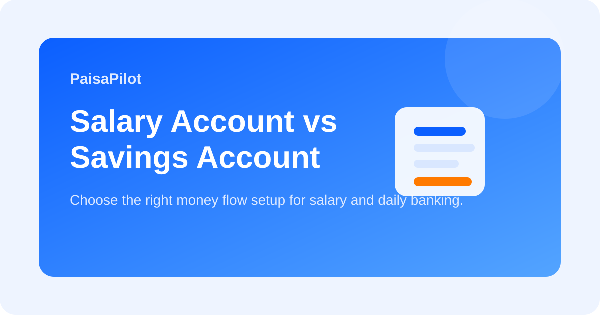

Salary Account vs Savings Account: Which One Should You Use for Daily Money?
Last updated: March 19, 2026

Many salaried people receive money in one bank account and then continue using that same account for everything forever. But salary account and savings account do not always work the same way. If you understand the difference, you can manage salary flow, emergency money, and monthly spending with less confusion.
Quick Answer
A salary account is useful for receiving monthly salary and short-term cashflow. A savings account is better when you want a stable personal banking setup that does not depend on employer relationship. Many people can use both together: salary account for inflow, savings account for structured money management.
What Is a Salary Account?
A salary account is usually opened by an employer tie-up with a bank. It often comes with temporary benefits such as zero-balance facility, debit card offers, or bundled services. But some of these benefits depend on regular salary credit.
What Is a Savings Account?
A savings account is your personal banking account. It is not tied to your employer. Rules are usually more stable, and you can keep it active even if you change jobs, pause work, or move your main salary elsewhere.
Practical Difference
| Point | Salary Account | Savings Account |
|---|---|---|
| Primary purpose | Salary credit and short-term cashflow | Personal banking and long-term use |
| Employer link | Usually yes | No |
| Zero-balance feature | May be available for active salary status | Depends on bank rules |
| Best use | Income receipt | Budgeting, emergency fund, long-term account stability |
Best Working System
- Receive salary in your salary account.
- Transfer fixed amounts to savings account buckets for bills, investing, and emergency money.
- Use one main spending account so statement review becomes easier.
- Keep job-change risk in mind. If salary stops, account rules can change.
When to Keep Both
- You want separate salary inflow and monthly spending control.
- You change jobs often and want one stable personal banking base.
- You want to protect emergency savings from routine spending.
Common Mistakes
- Leaving all money in the salary account and spending casually.
- Ignoring account status after changing employer.
- Using one account for salary, bills, savings, subscriptions, and emergency money together.
FAQ
Does salary account become savings account later?
In many cases, bank rules can change once salary credit stops. Check your bank's current terms.
Should I close my old salary account?
Not always. First check charges, minimum balance rules, and whether you still need it.
Related Guides
Bank Statement Review, Salary Slip Explained, Zero-Based Budget
Editorial Note: Educational information only; check your bank's current account terms before deciding.